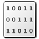

Les codes d'erreur
|
 |
Les codes d'erreurLes codes d'erreur de KeePass et leurs significations. |
|
Code d'erreur |
Nom |
Utilisateur |
Description |
|
0x00000000 |
Inconnue |
|
Une erreur inconnue s'est produite. KeePass utilise ce code d'erreur en interne et l'utilisateur ne devrait jamais voir cette erreur. |
|
0x00000001 |
Succès |
|
Aucune erreur n'est survenue. Tout a parfaitement fonctionné. |
|
0x00000002 |
Paramètre invalide |
|
Une fonction dans KeePass a reçu un paramètre invalide. Cela ne devrait jamais arriver. |
|
0x00000003 |
Manque de mémoire |
|
Le système d'exploitation n'a pas accordé suffisamment de mémoire à KeePass. L'opération en cours a été annulée. La base de données est peut-être dans un état cassé et ne doit pas être enregistrée. |
|
0x00000004 |
Clé invalide |
|
La clé principale fournie par l'utilisateur (mot de passe principal/fichier de clé) pour la base de données était incorrecte ou la base de données est corrompue. Assurez-vous que le mot de passe principal et/ou le fichier clé sont corrects. |
|
0x00000005 |
Erreur d'Accès Fichier : |
|
Le système d'exploitation (Windows) n'a pas accordé à KeePass l'accès en lecture au fichier de base de données spécifié. Notez que cela ne signifie pas que la base de données est corrompue ou quelque chose comme ça ; KeePass ne peut tout simplement pas obtenir un accès en lecture au fichier. |
|
0x00000006 |
Erreur d'Accès Fichier : |
|
Le système d'exploitation (Windows) n'a pas accordé à KeePass l'accès en écriture au fichier de base de données spécifié. |
|
0x00000007 |
Erreur Fichier : Lire |
|
Une erreur s'est produite lors de la lecture de la base de données ou du fichier clé. Cela peut arriver si, par exemple, vous ouvrez une grande base de données à partir d'une clé USB et retirez la clé pendant que KeePass lit le fichier. |
|
0x00000008 |
Erreur Fichier : Écrire |
|
Une erreur s'est produite lors de l'écriture de la base de données ou du fichier clé. Cela peut arriver si, par exemple, vous enregistrez une grande base de données sur une clé USB et retirez la clé pendant que KeePass écrit le fichier. |
|
0x00000009 |
Source d'aléas invalide |
|
Il s'agit d'une erreur cryptographique interne. La source aléatoire, utilisée pour générer des nombres aléatoires, n'est pas valide. Cela signifie qu'il produit des valeurs non aléatoires et que la sécurité (secret) de votre base de données ne peut donc pas être garantie ; donc, l'opération a été abandonnée. |
|
0x0000000A |
Structure de fichier invalide |
|
La structure du fichier de base de données actuel n'est pas valide. Cela peut se produire si la clé principale fournie par l'utilisateur (mot de passe principal/fichier de clé) n'est pas valide ou si le fichier est corrompu. |
|
0x0000000B |
Erreur cryptographique |
|
Une erreur cryptographique interne s'est produite. L'un des composants cryptographiques ne peut pas être initialisé, testé et/ou a renvoyé une erreur. |
|
0x0000000C |
Taille de fichier invalide |
|
La taille du fichier n'est pas valide. Cela signifie que le fichier est corrompu. |
|
0x0000000D |
Signature de fichier invalide |
|
La signature du fichier n'est pas valide. Cela signifie que le fichier est corrompu et/ou n'est pas un fichier que KeePass peut lire. |
|
0x0000000E |
Entête de fichier invalide |
|
L'en-tête du fichier n'est pas valide. Le fichier peut être corrompu, avoir été créé par une version plus récente de KeePass ou ne pas être du tout un fichier KeePass. |
|
0x0000000F |
Erreur d'accès fichier : |
|
Le système d'exploitation (Windows) n'a pas accordé à KeePass l'accès en lecture au fichier clé spécifié ou il n'existe pas. Notez que cela ne signifie pas que le fichier clé est corrompu, KeePass ne peut tout simplement pas obtenir un accès en lecture au fichier. |
|
0x00000010 |
Fournisseur : clé invalide |
|
Le greffon du fournisseur de clé n'a pas fourni de clé valide. |
|
0x00000011 |
Erreur de fichier : Vérifier |
|
Les données qui ont été envoyées au disque/lecteur ne correspondent pas aux données qui sont maintenant stockées sur le disque/lecteur, c'est-à-dire que le fichier a été corrompu par quelque chose. Voir l'erreur 0x00000008. |
|
0x00000012 |
Fichier KDBX |
|
Le fichier que vous avez essayé d'ouvrir est au format KDBX. Les fichiers KDBX ne sont pris en charge que par KeePass 2.x. Soit vous utilisez KeePass 2.x soit vous utilisez la fonction "Exporter" de KeePass 2.x pour migrer le fichier vers un fichier KDB KeePass 1.x. |
|
0x00000013 |
Erreur système |
|
Une erreur au niveau de l'utilisateur s'est produite et le système a fourni la description détaillée affichée dans la boîte de message d'erreur. |
|
0x00000014 |
Base de données vide |
|
La base de données est vide. KeePass refuse de charger/sauvegarder des bases de données vides. |


Utilisateur :
 : cette erreur n'est pas un bogue. KeePass n'a pas réussi à effectuer certaines opérations et vous pouvez corriger cette "erreur" vous-même. Par exemple : lorsque vous avez entré une clé invalide pour votre base de données, ne pas ouvrir la base de données n'est pas un bogue.
: cette erreur n'est pas un bogue. KeePass n'a pas réussi à effectuer certaines opérations et vous pouvez corriger cette "erreur" vous-même. Par exemple : lorsque vous avez entré une clé invalide pour votre base de données, ne pas ouvrir la base de données n'est pas un bogue.
 : cette erreur est un bogue. Vous ne devriez jamais voir cette erreur. Veuillez soumettre un rapport de bogue.
: cette erreur est un bogue. Vous ne devriez jamais voir cette erreur. Veuillez soumettre un rapport de bogue.